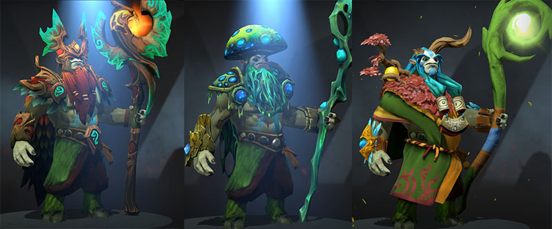
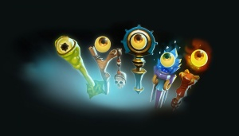
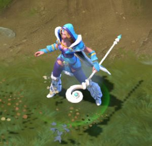
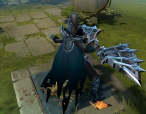
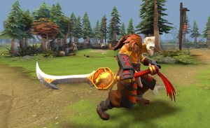
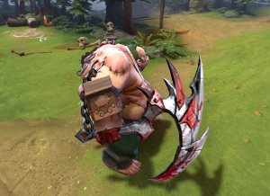
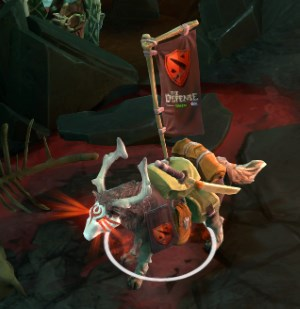
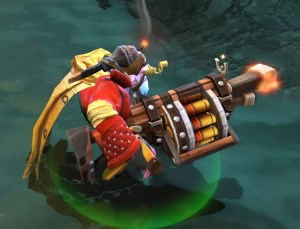
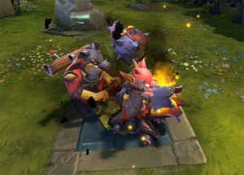

Cosméticos
Al ser un juego totalmente gratuito, la forma de monetización de Dota 2 se basa en cosméticos. Los cosméticos son cosas que el usuario puede comprar con dinero real y que no influyen en nada en la jugabilidad, sino que son puramente decorativos.
Los héroes cuentan con diferentes espacios en los que se les puede poner los cosméticos, generalmente es un espacio por parte del cuerpo. Cada tanto salen a la venta lo que se llaman "sets", que son un conjunto de items para cierto héroe, que al ponérselos en todos sus espacios, combinan a la perfección. Sin embargo, uno no está obligado a esto y simplemente puede mezclar diferentes prendas para cada parte del cuerpo.
 Estos cosméticos no se limitan a prendas para los héroes, sino que también se pueden comprar cosméticos cambiar la apariencia de tus wards, de tu courier, del campo del juego, y de muchísimas cosas más.
Cabe aclarar que la única manera de conseguir estos cosméticos no es con dinero real, sino que también existe la posibilidad de ganarte uno de forma aleatoria al terminar una partida.
El juego también cuenta con un sistema de cajas, el cual fue adoptado por muchos otros videojuegos con el mismo sistema de monetización. Básicamente hay chances de que un cofre aparezca en el inventario, el cual uno puede ver lo que puede llegar a tener adentro. En el caso de Dota 2, los cofres contienen sets completos de gran valor. Para abrir este cofre hay que comprar una llave con dinero real, y al utilizarla se descubre cuál de todos esos sets estaba adentro de ese cofre.
Rareza
Cada item cuenta con una "rareza", que es una categoría impuesta por Valve para determinar que tan especial es un cosmético. De menos a más raro se dividen en:
-
Common
Los cosméticos common son generalmente poco atractivos, no tienen ninguna particularidad en especial y la mayoría son muy baratos.
 -
Uncommon
Los uncommon, si bien son un poco más llamativos, comparten las mismas características de los common.
 -
Rare
Los items rare son llamativos y elegantes de por sí, aunque no brindan efectos especiales ni animaciones nuevas al héroe.
 -
Mythical
Los mythical son items caros. Comunmente, junto al cosmético, el héroe gana efectos especiales nuevos para sus habilidades o acciones.
 -
Legendary
Los cosméticos legendarios ya son premium, y traen consigo efectos especiales y animaciones para el héroe.

-
Ancient
Los cosméticos ancient son items que se consiguieron en eventos especiales y que ya no hay forma de obtenerlos.
 -
Immortal
Los cosméticos immortal comparten la característica de los ancient, que sólo se consiguen en eventos especiales, pero pueden obtenerse a través de otros jugadores.
 -
Arcana
Los items arcana son los mejores que existen en el juego. A un precio elevadísimo, cambian completamente la apariencia del héroe. Modifican tanto efectos como animaciones, iconos, efectos de partículas, poses y mucho más.
